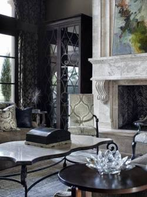
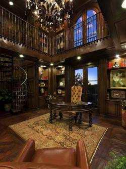
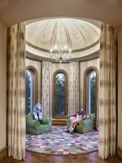
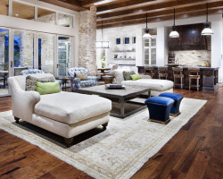
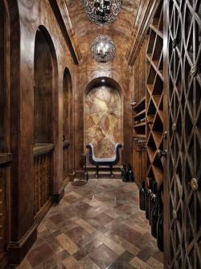

1 最上面那层果冻的味道太赞了！离火，加入软化的鱼胶片，搅拌至完全融化，加入100ml果茶，倒入容器，冷藏成型后，切碎，装饰在慕斯上

2 以森林和自然为主题的木质家居小产品

3 日本国内的一个环保组织more
trees与AXIS画廊在东京联合举办了一场名为“感受森林12天”的展览，旨在提高人们对日本目前的森林现状的认识。活动中展览的一组由深泽直人等日本精英设计师设计的以森林和自然为主题的木质家居小产品，让人眼前一亮。

4 创意分享 | Fran?oise Gilot，创作这些作品的时候作者正处于一个重要的时刻，缺乏技巧并且屡受挫折的创作者认识了一位对他意义非凡的老师，并且这位老师激发了他的灵感，他最终意识到对于他重要的东西并非创作一幅艺术品，而是艺术本身。

5 以森林和自然为主题的木质家居小产品

6 以森林和自然为主题的木质家居小产品

7 以森林和自然为主题的木质家居小产品
8 创意分享 | Fran?oise Gilot，创作这些作品的时候作者正处于一个重要的时刻，缺乏技巧并且屡受挫折的创作者认识了一位对他意义非凡的老师，并且这位老师激发了他的灵感，他最终意识到对于他重要的东西并非创作一幅艺术品，而是艺术本身。